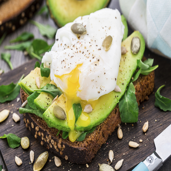

Bánh mì sandwich luôn là lựa chọn đầu tiên nếu bạn muốn có một bữa sáng nhanh gọn lẹ, mặc dù chúng ta vẫn thường nghe thấy (hoặc đọc thấy) nhiều người kêu gọi “giảm đường bột, tăng chất đạm và chất xơ”. Tuy nhiên, chất đường bột vẫn là nguồn năng lượng quan trọng, bạn thể giảm thiểu hàm lượng nạp vào nhưng không nên loại bỏ tuyệt đối. Quan trọng là bạn biết cách kết hợp chất đường bột với nhóm thực phẩm khác để giữ năng lượng đầy đủ cho đến bữa ăn tiếp theo. Món sandwich bơ sẽ giúp bạn thực hiện điều này.
Một lát bánh mì sandwich, ăn kèm ½ trái bơ là lựa chọn vô cùng hoàn hảo cho bữa sáng hoặc bữa ăn phụ. Đó là sự kết hợp rất tuyệt vời giữa chất béo và chất đường bột, vì bơ là loại trái cây tốt nhất, chứa nhiều chất béo có lợi cho sức khỏe.
Nguyên liệu làm món sandwich bơ:
(*) Chú ý: nguyên liệu này đủ cho 1 phần ăn cá nhân.
- Bánh mì gối: 2 lát
- Trứng: 2 quả
- Thịt xông khói: 3 lát
- Phô mai: 1 lát
- Bơ: 1 quả
Cách làm
Bước 1:
- Làm nóng chảo trên bếp rồi cho vào một chút dầu ăn và chiên trứng theo kiểu ốp-la. Rắc một chút muối tiêu để trứng được đậm đà.
- Áp chảo thịt xông khói cho thịt có mùi vị thơm và giảm bớt mỡ.
Bước 2:
Cho bơ vào âu và nghiền mịn.
- Phết đều bơ lên từng lát bánh mì.
- Đặt trứng đã chiên lên trên lớp bơ vừa phết ở cả 2 lát bánh mì.
Bước 3:
- Ở 1 lát bánh mì, cho thịt xông khói phủ trên trứng chiên.
- Với miếng bánh mì còn lại, bạn tiếp tục để phô mai lên trên trứng.
- Ép 2 phần bánh mì vào nhau vào dùng màng bọc thực phẩm bao kín miếng bánh để cố định.
Bước 4:
- Dùng dao sắc bắt chéo, chia đôi phần bánh ở trên là bạn có được món sandwich bơ cực hấp dẫn, béo thơm và tươi mới.
Chúc các bạn có những giây phút thật ngon miệng cùng món ăn hấp dẫn này!